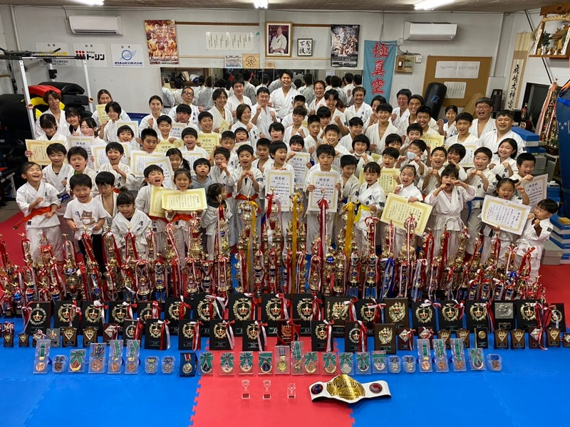

ふじみ野本部
- 住所
- 埼玉県ふじみ野市苗間370-1-3ふじみ野駅 東口から徒歩約7分
- 曜日・時間
- 火・金キッズ 16:30–17:20
低学年 17:40–18:40
高学年 19:00–20:00
一般 20:30–21:30 - 土初級合同 17:30–18:30
一般・少年上級合同 19:00–20:30 - 月・水・木キックフリー
月・木 19:00–22:00
水 18:00–22:00
- 火・金キッズ 16:30–17:20
- 対象
- 空手は3歳から。幼年・小学生・中学生・一般のクラスがあります。
- 月謝
- 月5,000円から（公式ブログ・2023年掲載）現在の費用はお問い合わせください。
- 駐車場
- 駐車スペースあり。見学時に利用できるか、事前に道場へご確認ください。道場の送迎ルール
